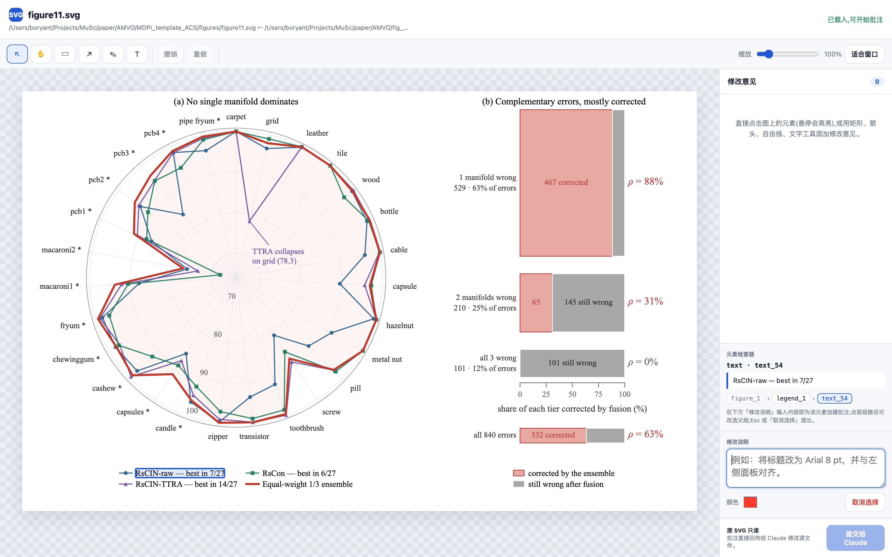

SVG
svg-annotate-mcp
MCP · 开源
在浏览器里圈图批注,
让 Claude 替你改图
github.com/sunjianbo-123/svg-annotate-mcp
点选 SVG 元素或圈选区域写下修改意见,
批注实时回传 Claude 修改源文件,页面自动刷新。
🎯 元素级点选
📡 MCP 实时回传
🔄 改完自动刷新
127.0.0.1 · figure11.svg — SVG 批注 · svg-annotate
